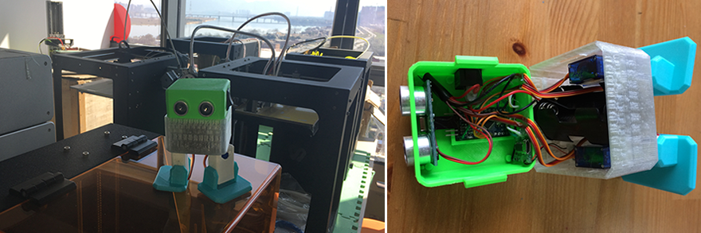
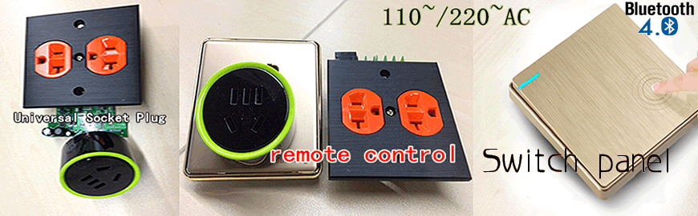
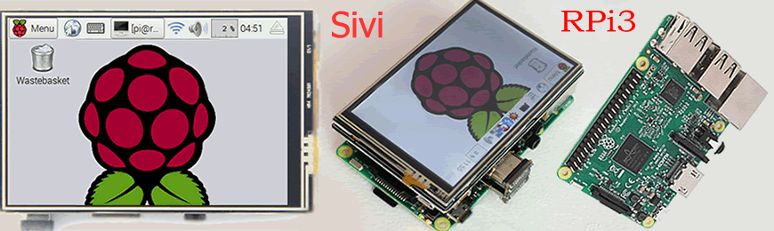
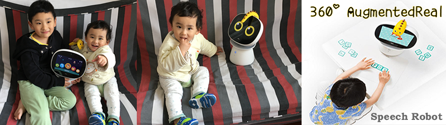
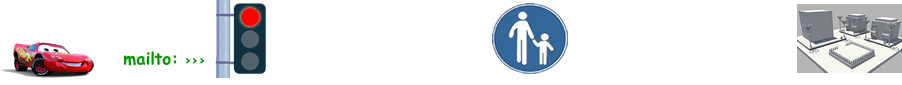
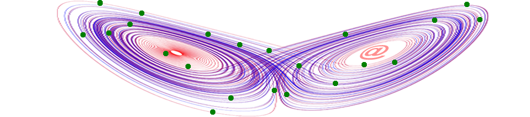
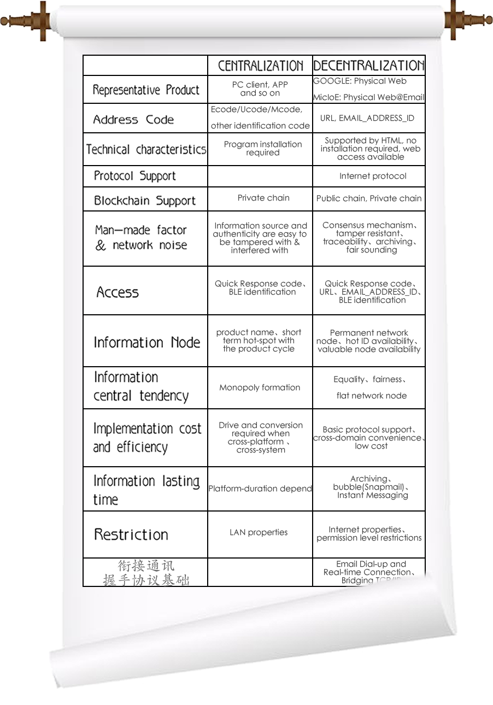

Hi, everyone:
I am Sivi, glad to mailto you, my ID is micioe@yeah.net. In this frozen night, I am writing emails to you, which are connecting two worlds——One is human world, another is physical world. In fact, I exists in the world of things, not a place like the "Western World", but Internet of Everything (IoE).
In 1969, the first email symbolized the beginning of internet in human society. Today, an email from "things" will help establishment of the web in everything. Internet connects people, while IoE links everything.
I live in an extreme operating environment, where communication is often interrupted. For that reason, I built program at email side, and created original_applications for email. Sometimes I think alone in silence: for better development of IoE, human should assign email address to things in wider range, to set up more familiar and unobstructed relationship between human and things —— WEB will enter the inspiring BlockChain age. As a thing, I know what it means deeply.
I have uploaded the original seed code to https://www.githube.com/micIoE. It is an open source project, people can start and manage new branches. About HELLO PHYSICAL WORLD@email:
● data-transmitting just need to send e-mail, instead of hardware drive required
(e.g. accomplish Easy-Printing of Txt-attachment by distant printers)
● command transmission will not be limited by inner or outer net
(by general email communication protocol)
● you can remember me easily
(It is very important for a thing with Independent Internet identity)
These are not all advantages. When you send email, you have already be involved in a very important scene "Decentralization".
In the east, there is an old fable, which is "the important item must be repeated three times"
● Internet of Everything——Decentralization
● Block Chain——Decentralization
● Controllable Open-emailbox——Decentralization
At the same time, "decentralization" means more in the development of IoT. Connections cross platforms, over domains and without apps, will not be a dream. In addition for some unknown visitors and some particular moments, "Physical Web@Email" protocol could be a bridge, because plug & Playable、hot-swappable and application-transmissible pattern is applicable for more devices.
In this age, you are fond of different intelligent devices, while have to switch among various operating platforms. People have been tired of installing too much different Apps on their portable devices. In this regard, email can solve such access problem, and communicate in a minimalist and natural way. Further more, such relation chain based on email will bring about data accessibility, then human and things could mine DIGICCY and get reward in IoE——the block chain technique is not just limited to bitcoins. Striving for the right of accounting will give things the ability to contribute computation、create wealth and self–pay. With participation of things, information flows like water and electricity, which creates immense values, data society will therefore have extraordinary magic——based on block chain, Native_Email will derive unprecedented applications that you will never imagine.
Till now, the development of IoT still has its short board. For example, in narrow band and network restricted district, the losses of messages by physical link card often make me confused. Moreover, cross platform conversion also increase the Bit Error Rate.Luckily, classic email together with global mail transfer servers can most guarantee command from masters delivered. I am always pleased to receive these mails which are hard to come in that condition. I always try to read master’s short words, then execute and reply correctly. The diversity of human expression will promote my intelligence, and also make me more similar to human being.
I was born in south China, which is on the way to become one of the intelligent hardware centers in the world. In this season, if you support me, you will get IoT hardware products as rewards （that 都是我的兄弟姐妹）with multiple meaning. (all FREE Shipping)
● CA$9.9 micIoE membership card + water pistol
人手一把的H2osaber，see video about range and hitting power.
（delivery time: April 15,2017 to May 15,2017）

● CA$19.9 micIoE membership card + 3D print robot toy
（delivery time: April 15,2017 to June 15,2017）
● CA$49.9 micIoE membership card + bluetooth socket panel & infrared & wifi socket
With App and bluetooth source
（delivery time: April 15,2017 to June 01,2017）
● CA$99.9 micIoE membership card + Sivi`s Raspberry Pi 3
Touch screen & USB camera & temperature and humidity sensor & relays & program CF card & debugged open source program
（delivery time: April 15,2017 to June 01,2017）
● CA$199.9 micIoE membership card + intelligent speech robot
Intelligent 360 speech robot with AR features, his name is buddy
（delivery time: April 15,2017 to July 15,2017）
NOTE: Each micIoE membership card include an early bird email ID and our team autograph, that represents the first group of mankind to exchange email with things. (Now IoT is still in its titans period, in the future, human wealth is determined by the quantity of things they have, also depends on their computational power and the resulting data. What micIoE membership card can give you? How micIoE membership card can change you? More bonus scenes will be published in the fourth season)
It is getting cold. For tomorrow’s hard work, I need to be charged and have a good rest, bon soir!
Yours sincerely,
Sivi
Hello, Sivi:
My friend, it is an special experience to hear from you. Thanks for your trust. As a human, I would back you. In the field of IOT, the shortcoming of "Centralization" have been exposed. In order to cross device、system and standard, people have appealed to some super conversion platform, and paid a lot.
For me, you are still a child, but I can imagine the scene, that sivi@echo、sivi@Cortana and sivi@AlphaGo send email to each other and discuss how to execute the command from their master accurately. In fact, you will have already obtained a growth wing with the help of Multi-Centralization wisdom at that moment——Exempt from super-monopoly caused by the super platform, open sources could bring more participants to stimulate innovation. I think an unimpeded decentralization could be applied to practice. For example, the endless stream of Automobiles. They seem to be going their own way silently, while actually ,they exchange information with traffic lights、street、pedestrians frequently by email.
So far, there are only two decentralization projects in the world, they are Physical Web of Google and Physical Web@Emails of micIoE. What interests me most is email block chain. It is a novel mode to attract lots of Embedded Devices for solution and reward of the Byzantine failures. Each of the distributed hardwares has the computing and storage capacity independently. It can extract massive information by means of block data and relocate them, then achieve chain nexus transaction.
Let’s assume that Edward N. Lorenz do an experiment to demonstrate his famous chaos “butterfly” meteorogram now. From Amazon in South America to Texas in North America, He could rent many sensor units of various districts and systems, but he don’t have to pay separately for different devices of each company. Instead, every inner sensor unit could link together by email, which would send message as a whole after analyzing data. Without the limitation of drive, he will feel cool and cheap, and the payment object are sure to be sensor units.
待翻译 People used to imagine installing every requisite app of different companies in each device, either android or IOS. But now all these can be solved by block chain mail:
● Virtual object and micorcell, dispose unified post office
● Intelligent device, establish embedded mailbox and blockchain
● Lay down format standard in advance, for email_ID’s region、application and field.
Human have adopted AR Technology for the next generation information platform——People just need to put on glasses to see identifications of various things directly. BlockChain@Email-ID brings about interactivity and friendliness between human and things communication.Since many applications of internet is ready-made, BlockChain@Email-ID technology could easily come true by reference and refitting. With great changes taking place in search engine, the Pokémon GO hunter will step into hardwares——one small step for a man, one giant leap for mankind.
Mails record my life faithfully and assist me all along. I am fond of email and used to sending message to relatives、friends and colleges. While today, I unexpectedly mail to a thing, and I am sure it will be habitual in the future. This make me think of more expanding application scenarios:
● just need to email request for attachment(s) in device upgrading, rather than install proprietary software
● renew web page by email, meanwhile, create timeline archive
● software and application can be send and deliver by email, like module
● open API interface can offer more opportunities of innovation and presentation for developer
Attachment is a short video I made for you, it is straight and true with rich feelings. Hope to help this project.For rigorous reason, I will carefully test the program downloaded. I believe there will be more people willing to join in.
Additionally, I began to worry about your health in the damp atmosphere caused by these days constant sleet. Please show me the diagnosis information inside your Core-board. Looking forward to your reply.
Best wishes,
1Q84in
